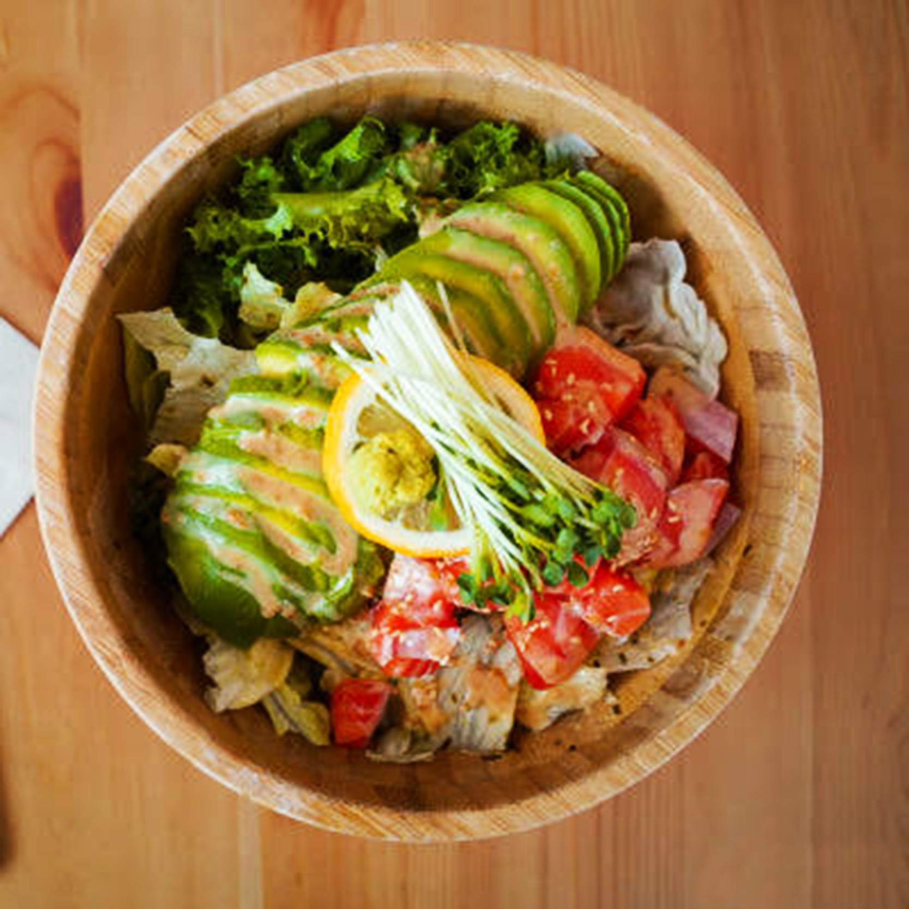

Sup Ikan dengan Tahu dan Sayuran
Bahan:
- 2 potong ikan (bisa ikan kakap, ikan salmon)
- 1/2 papan tahu, potong dadu
- Berbagai macam sayuran (wortel, bayam, jamur)
- 3 siung bawang putih, cincang
- 1 ruas jahe, memarkan
- Garam dan merica secukupnya
Cara Membuat:
- Rebus ikan hingga matang, suwir-suwir.
- Tumis bawang putih dan jahe hingga harum, masukkan sayuran.
- Tuang air secukupnya, masak hingga mendidih.
- Masukkan tahu dan suwiran ikan. Bumbui dengan garam dan merica.
- Sajikan selagi hangat.